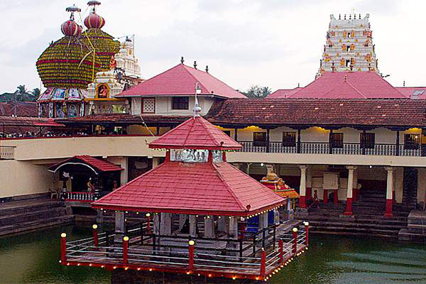
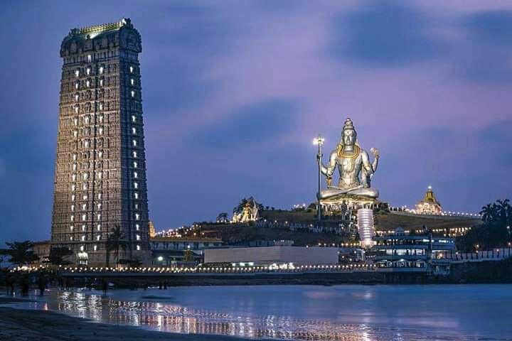
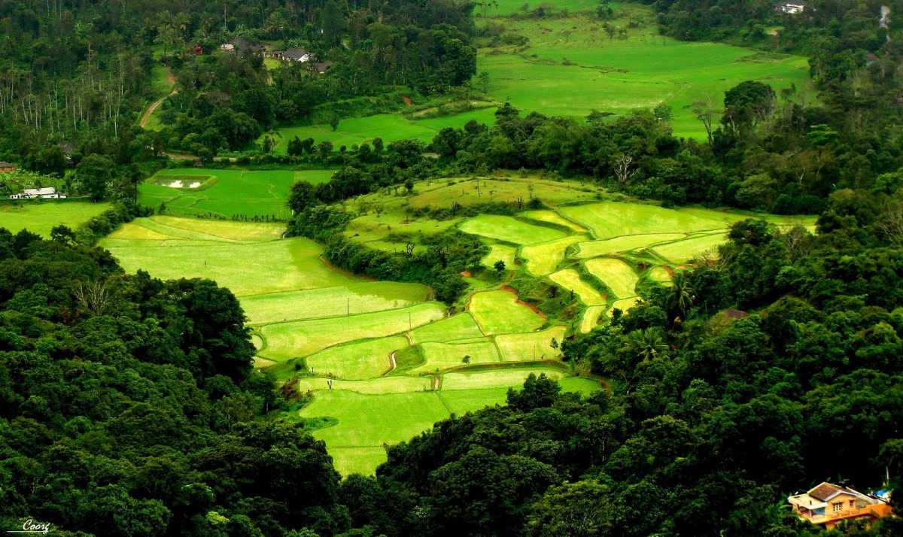
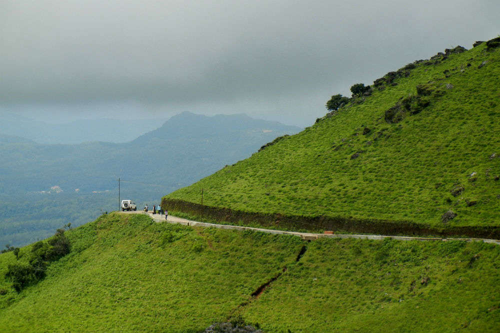
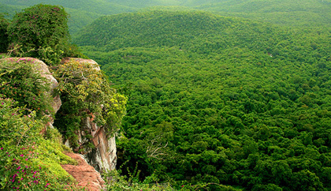
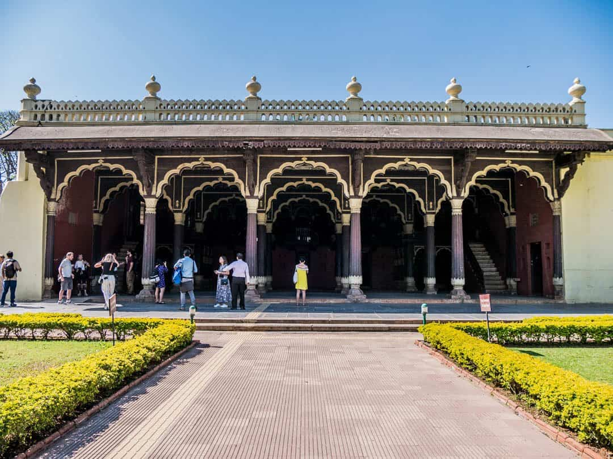
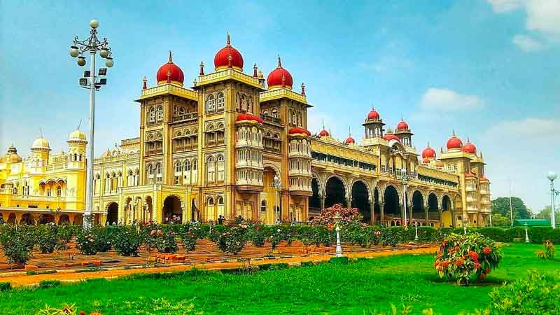
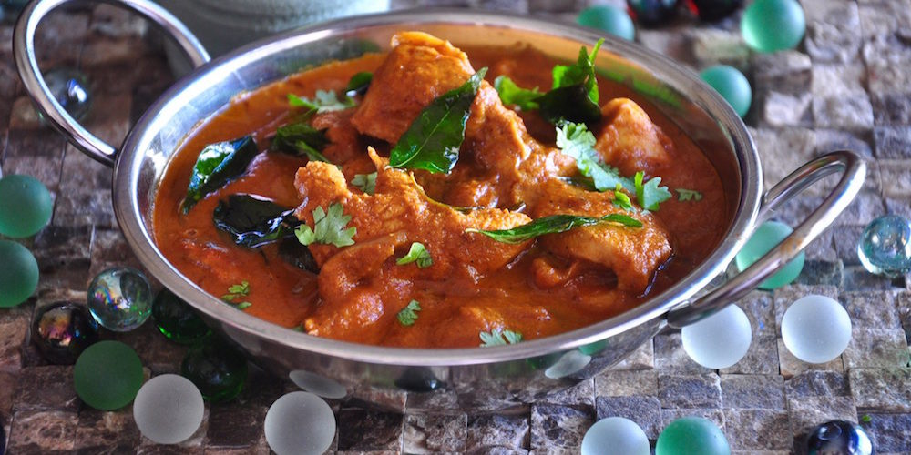
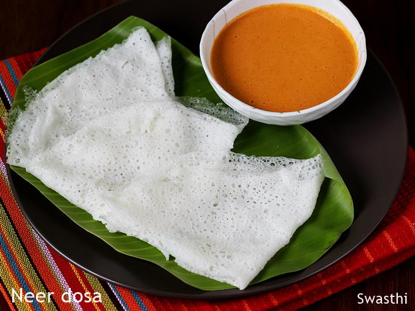
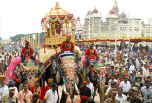

ST.GEORGE CHURCH
St. George's Syro-Malabar Forane Church, locally known as Edapally Church , Malayalam: മാർ ഗീവർഗ്ഗീസ് സഹദാ പള്ളി, ഇടപ്പള്ളി) is a Catholic pilgrimage church in Edapally, Kochi, India. Asia's largest shrine to Saint George, about five million people visit it every year. St. George's Forane Church, north-east of Kochi, is 500 m from the intersection of NH 66 and NH 544. The nearest airport is Cochin International Airport in Nedumbassery, about 22 km from the church. The Edappally railway station is 3 kilometres (1.9 mi) away.[1] Kochi Metro, the city's rail network, runs in front of the church.
ARTHUNKAL CHURCH
The largest shrine of St Sebastian in the world, the church known as Arthunkal St. Andrew's Basilica and St. Sebastian's International Shrine in Arthunkal, Cherthala, Alappuzha district, Kerala, India, was constructed by waning just Portuguese missionaries in the 16th century. The grand annual feast of St Sebastian Arthunkal in January, which lasts for a month accompanied by millions of pilgrims is one of the important celebrations and major attractions in India.The feast of shrine Basilica also known as makaram perunnal. The church was rebuilt in 1584 under the vicar Jacomo Fenicio, an Italian Jesuit[1] whose devotees claim to possess powers to heal the body and mind.
WATERFALLS
Athirappilly
Athirappilly is a first grade Grama Panchayath with 489.00 km2 area in Chalakudy Taluk, Thrissur district in Kerala, India. It is located 60 km from Thrissur city, 70 km northeast of Kochi city, 55 km northeast of Cochin International Airport, and 30 km from Chalakudy town.The Athirappilly Falls is situated 1000 ft above sea level on the Chalakudy river, at the entrance to the Sholayar ranges of the Western Ghats, Athirappalli is a scenic combination of forests and little streams. Falling from a height of 80 feet, this is one of the largest waterfalls in the state. Many endangered and endemic species of flora and fauna are found in the forests of the Athirapilly-Vazhachal area. This area is the only place in the Western Ghats where four endangered hornbill species are seen.
MEENMUTTY
Meenmutty Falls is located 29 km from Kalpetta in Wayanad District in the state of Kerala, India. It is a three-tiered waterfall with a height of 300 metres.Meenmutty is a combination of Malayalam words Meen (fish) and Mutty (blocked). Meenmutty Falls can be accessed from Mananthavady - Kuttiady road . Meenmutty waterfalls are dangerous during rainy seasons due to high inflow and many people have drowned since 1991. Meenmutty falls is surrounded by Lush green tea plantations making the hike to the falls a memorable experience to the tourists.
PALARUVI
Palaruvil is a tiny village in Kollam district, Kerala, South India. Palaruvi falls is situated in Palaruvi and Palaruvi is famous for Palaruvi waterfalls.Palaruvi Waterfalls, which literally translates to ‘Stream of Milk’, comes down through rocks from a height of 300 feet. This has turned into a delightful picnic spot where one can enjoy a spectacular view uninterrupted. The rocky terrain one has to traverse before reaching it can be cumbersome but once these majestic waterfalls come into sight, any kind of fatigue disappears immediately. The cool water is frequented by those seeking a refreshing dip and it regularly attracts people in large numbers.
power house waterfalls
Chinnakanal Waterfalls are more famous by the name Power House Waterfalls. The name is derived from the place where the waterfall is located – the Chinnakanal village. It is situated about 1 Kilometer away from the National Highway NH 49 on Thekkady – Periyar Wildlife Sanctuary route. The best time to visit this place is when you are proceeding from Munnar to Thekkady for sightseeing.Chinnakanal Waterfalls is among the most popular tourist spots in Munnar. The cascading waterfalls are lying just 18 kilometres away from Munnar, making it a must to go spot on the bucket list of tourists visiting Munnar. The waterfall cascading through the deep steep rocks from a height of about 2,000 meters is really attractive
MUST VISIT PLACES
ALLEPPEY
Alappuzha (Alleppey) is known as ‘the Venice of the East’. Offering the best tourist places in Alleppey, this charming place is the hub of Kerala’s backwaters and is home to a huge network of backwaters and more than thousand houseboats. The houseboats you find in the backwaters of Alappuzha are in fact a reworked version of the Kettuvallams of olden times. Kettuvallam is a Malayalam word, ‘Kettu’, means living structures and ‘Vallom’ means boat. In the olden days, kettuvallam or boat with a thatched roof that covers over wooden hulls was used to carry tons of rice and spices.The modern houseboats are equipped with all the comforts of a good hotel room like air conditioners, modern toilets, cozy living rooms, a kitchen and even a balcony for angling. An uninterrupted view of life in the backwaters fringed with coconut trees can be enjoyed from a houseboat. A perfect place to unwind with its laidback canals and lush greenery.
SWIM THE BLUE WATERS
A picturesque beauty in God’s own country, Kerala Paapnasanam beach is another name of Varkala Beach. The setting of this beach is striking enough to take your breath away, with a long winding stretch of cliff and views that extend over the Arabian Sea. This beach is a retreat for sunbathing and swimming. Paapnasanam means one which washes off sins so this beach has also spiritual importance as it rejuvenates body and soul. So head here for sake of your soul as well as fun!
MUNNAR
Munnar is a town in the Western Ghats mountain range in India’s Kerala state. A hill station and former resort for the British Raj elite, it's surrounded by rolling hills dotted with tea plantations established in the late 19th century. Eravikulam National Park, a habitat for the endangered mountain goat Nilgiri tahr, is home to the Lakkam Waterfalls, hiking trails and 2,695m-tall Anamudi Peak.
FOOD
Idiyappam
Idiyappam (Tamil: இடியாப்பம், Malayalam: ഇടിയപ്പം), also known as string hopper / nool puttu (Tamil: நூல்புட்டு, Malayalam: നൂൽപ്പുട്ട്), or noolappam ( Tamil: நூல் அப்பம் or நூல் ஆப்பம், Malayalam: നൂലപ്പം), chomai (Kannada: ಚೋಮಾಯಿ), indiappa (Sinhala: ඉඳිආප්ප) is a rice noodle dish originating from the Indian states of Tamil Nadu and Kerala. It consists of rice flour pressed into noodles, woven into a flat disc-like shape and steamed. The dish also spread to Southeast Asia, where it is called putu mayam in Malaysia and Singapore, putu mayang in Indonesia.
ERISSERY
Erissery is a traditional dish of Kerala, which is also known as Ellisheri. South Indians celebrate the festival of Onam with various kinds of Sadhya dishes, and this side dish recipe is one of them! This delectable vegetarian recipe is a combination of pumpkin, red beans, coconut, spices and some tempering. This easy-to-make and simple recipe can be prepared quickly at home in just 35 minutes. Serve this recipe to your friends and family over lunch, brunch or dinner. This recipe tastes best with Kerala red rice as well as with steamed rice. If you want to have it in the traditional way, you can enjoy this recipe along with rice on a banana leaf. Apart from serving this dish on Onam, you can also serve this delicacy at buffets, kitty parties, potlucks or house parties. Just follow the easy steps mentioned here and make this to impress your guests! You can serve this delicacy with Appam, Masala dosa, Tomato rice.
LANGUAGE
MALAYALAM
Malayalam (/ˌmæləˈjɑːləm/;[7] Malayalam: മലയാളം, Malayāḷam ?, [mɐlɐjäːɭɐm] (About this soundlisten)) is a Dravidian language[8] spoken in the Indian state of Kerala and the union territories of Lakshadweep and Puducherry (Mahé district) by the Malayali people. It is one of 22 scheduled languages of India and is spoken by 2.88% of Indians. Malayalam has official language status in Kerala, Lakshadweep and Puducherry (Mahé),[9][10][11] and is spoken by 34 million people worldwide.[12] Malayalam is also spoken by linguistic minorities in the neighbouring states; with significant number of speakers in the Kodagu and Dakshina Kannada districts of Karnataka, and Nilgiris and Kanyakumari, districts of Tamil Nadu. Due to Malayali expatriates in the Persian Gulf, Malayalam is also widely spoken in the Gulf countries.
LIFESTYLE AND CULTURE OF KERALA
The people of Kerala are the most simple and down to earth people.They like to live in their own world of simplicity and originality. They are known as "keralites", since they are natives of Kerala.The people of Kerala are very protective about their religion and ancient practices,rituals and traditions. They are proud of their culture and will go to any lengths to preserve them. The lifestyle of Keralites is uncomplicated and they seem happy and content with the simple pleasures of life.
The people of Kerala speak Malayalam. These people emphasize much on education and make it a point to ensure that the younger generation knows the religious teachings of their culture.The Keralites also are very progressive in terms of cleanliness,healthcare and physical quality of life.Most people are conversant in English and make it a point that their kids receive education at least till the primary level.
BEST TIME TO VISIT KERALA
October to April is the best time to visit Karnataka. Winters are the best time to go on a wildlife safari or attend the grand Mysore Dussera. Owing to its proximity to the western coast, Karnataka is quite humid during Summers from April to June. While coastal regions are hotter, hill stations are mild and colder.
